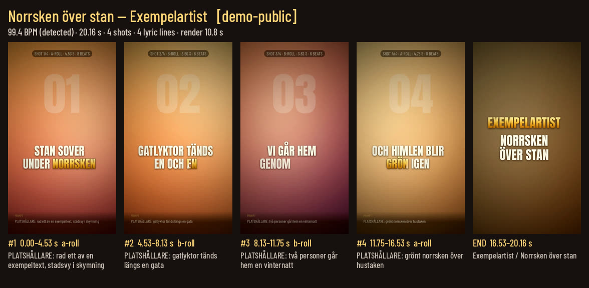

Lokal mediaverktygslåda för kreatörssamarbete
En verktygslåda som körs helt lokalt, utan API-nycklar eller betaltjänster.
Byggd för ett samarbete med en musikskapare: analys, transkribering och förhandsvisning av idéer.
Allt nedan är uppmätt idag på en vanlig maskin med 8 kärnor och ingen GPU.
Förhandsvisning (9:16)
Liten text, så att bilden står i fokus. Platshållarkort, egen exempeltext och egengenererat syntljud; texten landar på takten, nyckelord i guld. 20 s video, renderad på ca 11 s.
Val per paket: textstorlek liten/medel/stor och säkra marginaler för TikTok/Reels/Shorts (texten håller sig borta från knappar och bildtext).
Samma demo med stor text

Verktyg och mätvärden
- Transkribering (whisper.cpp)small ≈ 0,37× realtid · medium ≈ 1× realtid
på CPU - OCR (Tesseract eng+swe)≈ 0,7 s per bild
text ur skärmbilder och affischer - Röstseparation (demucs)sång / komp
stämmor för analys och timing - Lokal språkmodell (Ollama qwen2.5:1.5b)≈ 22 token/s
sammanfattning och taggning - Bildbeskrivning (moondream)≈ 5 s per bild
lokalt, inga uppladdningar - Hämtning (yt-dlp)video/ljud till lokal analys
- Videoanalys (ffmpeg)klipptakt + kontaktark
hur ofta det klipps, översikt per scen - 9:16-förhandsvisning med text i takt20 s video på ≈ 11 s
beat-detektering, guldnyckelord, slutskylt, textstorlek, säkra marginaler - Paket-linterkontroll per statusnivå
idé → förberedd → förhandsvisad → klar - Nattköanalysjobb körs automatiskt
resultat klara till morgonen
Högsta minnesanvändning: 2,55 GB RAM. Ingen GPU. Inga betaltjänster.
Arbetsflöde
- Gemensamt repo där idéer, paket och analyser samlas.
- Överlämningsrader: varje steg avslutas med en kort rad om vad som är gjort och vad som väntar.
- Kvalitetsåterkoppling med enkla poäng på förhandsvisningar, så nästa version blir bättre.
- Gratis lokal förbearbetning först: analys och förhandsvisning innan någon betald generering.
- Ägaren bestämmer alla betalda anrop och all publicering.
- IP-taggar respekteras: varje paket anger vem som äger materialet.